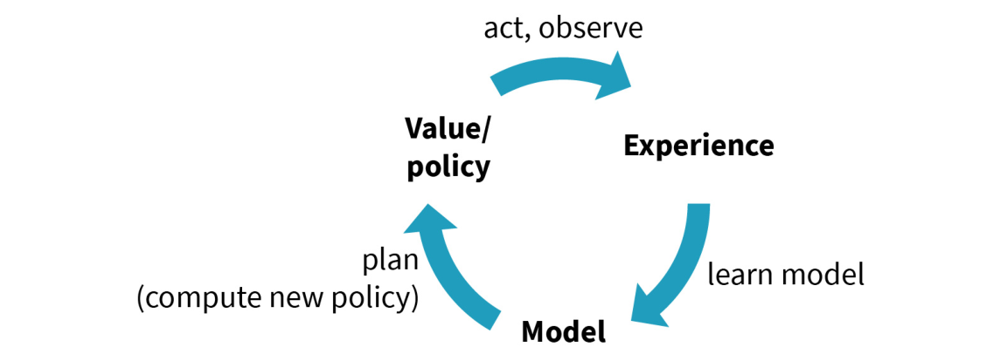
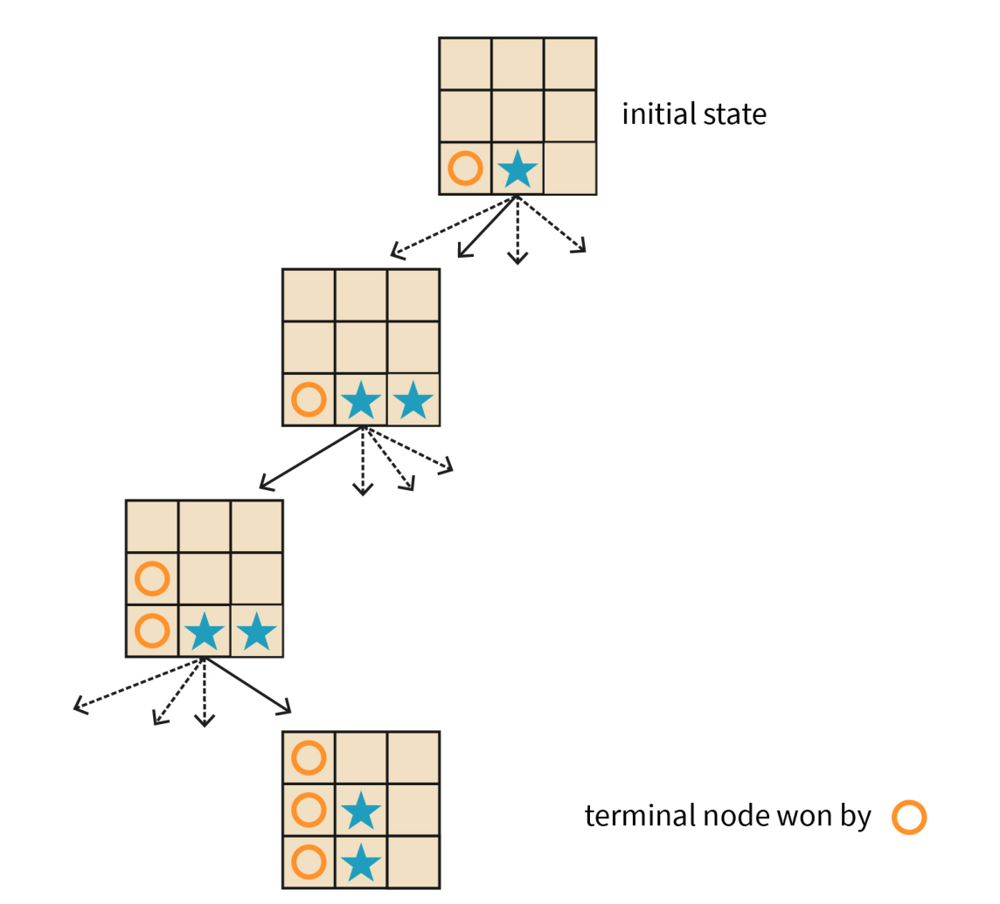

DLMAIRIL01 - Source-derived printable review sheet
Condensed from the same learning note. No additional teaching topics or official examination questions. Formulas and fonts render offline.
Model-based learning estimates rewards and transitions for planning; Dyna reuses learned information, MCTS limits search, and MBPO limits imagined rollout length to reduce compounded model error.
| Term | Meaning |
|---|---|
| World model | An estimated environment used to predict rewards and transitions. |
| Approximate planning | Optimize against an estimated rather than fully known model. |
| Dyna | Combine real experience, model updates and repeated value planning. |
| Active learning | Select real samples for their useful information. |
| MCTS | Selection, expansion, simulation and backpropagation through a search tree. |
| Compounding model error | Prediction errors accumulate along imagined continuations. |
| MBPO | Use model ensembles and short rollouts from previously experienced states. |
Model: with known state/action spaces.
Dyna combines real experience, model learning and planning.
MCTS: selection -> expansion -> simulation -> backpropagation.
MBPO: sample previously encountered states, then use an ensemble for short imagined trajectories instead of one long unreliable rollout.
The source Tic-Tac-Toe tree makes future moves explicit and carries terminal results back toward the first choice. Go illustrates why exact rules do not make exhaustive planning practical. MBPO addresses a different issue: inaccurate learned dynamics during long imagined sequences.
Study these with the detailed explanation in the linked Obsidian note.


Answer before expanding. Open the answers before printing to include them.
Transition probabilities and rewards representing current knowledge.
Its transition and reward estimates are not fully known exact values.
Real interaction, model updates and repeated model-informed value improvement.
Disagreement between observations and model predictions in regions relevant to policy improvement.
The number of future move sequences can make exhaustive planning intractable.
Selection, expansion, simulation and backpropagation.
Simulation outcomes updating search-node statistics.
MCTS with deep value and policy networks.
Long rollouts compound learned-model errors.
States previously encountered during real interaction.
Eighteen.
Learning note: 05_unit_5_reinforcement_learning_approaches/02_model_based_learning.
Course book pp. 172-176. Printed page + 2 = PDF viewer page. Personal-study use.